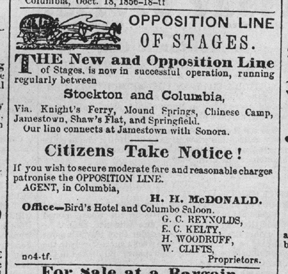
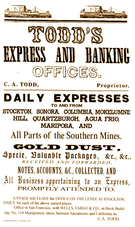
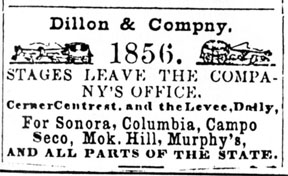
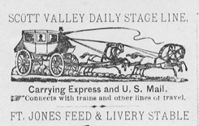

A Mud Wagon or Stagecoach - 1880
(6 hoses are called a "six-up" and this coach is one used as early as 1850.)
Accounts of Stagecoach Travel
Transcribed by Danette L.H. Øydegaard.
(quoted verbatim from original sources as noted)

Transcribed by Danette L.H. Øydegaard.
(quoted verbatim from original sources as noted)










Page created for the public by
Floyd D. P. Øydegaard.

Email contact:
fdpoyde3 (at) Yahoo (dot) com